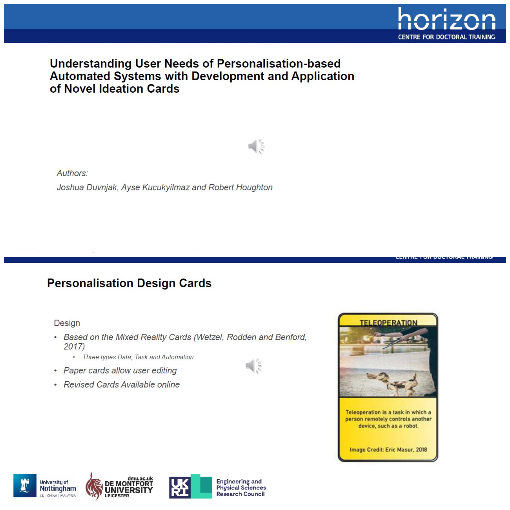

Personalisation Design Cards
- Conference Paper Publication at AHFE 2024
- Novel Ideation Cards
- Qualitative Research Skills
This paper consisted of the generation of a novel set of ideation cards and getting participants involved with using them to codesign their own personalisation systems.
Augmented Reality Smartphone App
- Augmented Reality Mobile Application
- C# Programming Skills
- Qualitative Interview Skills
An Augmented Reality smartphone technology probe was selected as the method. The technology probe itself was designed through the use of User Persona and Scenario Techniques, with an iterative design approach. It was implemented using the Unity (scripted in C#) and Vuforia AR package as a foundation.

Sensor-based Hat
- Built using RaspberryPi/GrovePi with sensors
- Python Programming Skills
- Human Computer Interaction Skills
The project is an inactivity monitor and alarm system. It tracks user movement and provides a visual alarm when they have been inactive for too long. It does this by combining different sensor data to determine whether a user is walking and whether they have changed room, these link to show whether a user is outside.The system was tested and developed in multiple ways by collecting real-world data sets. The system is mainly interacted by a person through the sensors in the system.